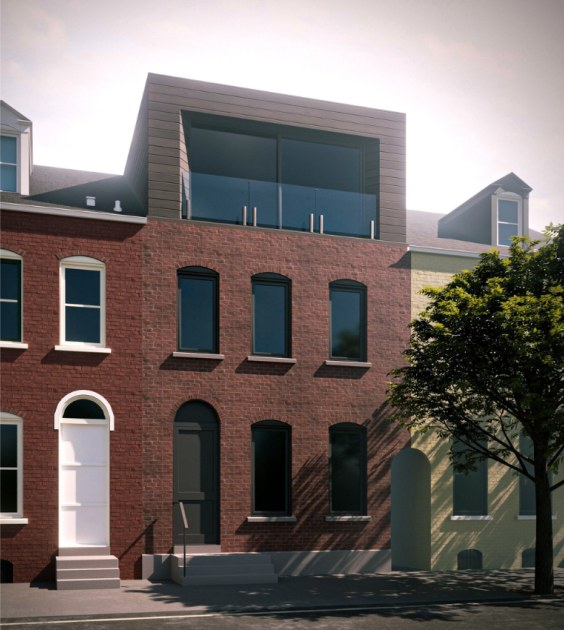

This week’s Passive House sweep
- Virginia home energy rebates still waiting on DOE
- Phius 3.0 points toward resilience
- PhiusCon shows panelized costs falling in Boston
- Efficient New Homes 2027 revisions widen the Phius path
- All-electric rule dates now unsettled
- Maryland home rebates still pending DOE
- Lemon Street rowhouse retrofit earns Phius ZERO

ExtraReach is still in the planning stage. This week’s sweep (roughly October 12–19) covers rebate timing in Virginia and Maryland, where the Passive House Institute US (Phius) says it is heading after PhiusCon, and a few code dates worth watching.
Virginia home energy rebates still waiting on DOE
Virginia Energy updated its rebate FAQ on October 13. It sent updated applications for the Home Owner Managing Energy Savings (HOMES) and High Efficiency Appliance Rebate (HEAR) programs to the U.S. Department of Energy (DOE) in September 2026. Neither program is live, and Virginia Energy can’t give a launch date. Proposed budgets are about $75.6 million for HOMES and $75.2 million for HEAR, both still subject to DOE approval.
Under Virginia’s proposed design, new construction is not eligible for HOMES. Some HEAR measures may still apply to qualifying new homes once final rules are approved.
A new Passive House build in Virginia shouldn’t plan around HOMES. HEAR may help with heat pumps or a heat pump water heater, but treat it as a possible bonus until the program launches.
Sources: Virginia Energy rebates FAQ
Phius 3.0 points toward resilience
In an October 14 post-conference note, Phius founder Katrin Klingenberg described what she sees as “Phius 3.0.” There’s no new standard yet. The direction is simpler delivery without weaker quality assurance, workforce training, electrifying existing buildings and new communities, helping lenders and insurers recognize the value of resilience, and connecting passive buildings to a changing grid.
Resilience is becoming part of the case for Passive House, not just energy bills. A low-load home that stays comfortable through an outage is a story worth telling to lenders and insurers.
Sources: Phius post-conference note
PhiusCon shows panelized costs falling in Boston
A slide presented at PhiusCon showed panelized construction costs on Boston’s Bunker Hill redevelopment falling from about $585 to $525 per square foot, with later buildings expected to come in under $500 per square foot.
Costs drop as builders repeat the work. That’s an encouraging sign for prefabricated wall and roof panels in the Mid-Atlantic as more teams build them.
Sources: Passive House Accelerator PhiusCon recap
Efficient New Homes 2027 revisions widen the Phius path
DOE’s Efficient New Homes program (formerly Zero Energy Ready Homes) released revised documents on October 9. They’re required for projects permitted on or after January 1, 2027. Multifamily projects can now meet the program’s performance requirement through Phius modeling in more ways, such as beating all five Phius thresholds by 2–4% depending on climate zone, or meeting the Phius source energy target with heat pump water heating.
Mid-Atlantic multifamily projects pursuing Phius certification will find it easier to earn the DOE label alongside it.
Sources: EEBA notice
All-electric rule dates now unsettled
Updated Oct 26, 2026: October 28 is no longer the date to watch. New York’s rules stay on hold while the challengers decide whether to ask the U.S. Supreme Court to hear the case, and the deadline for that petition is November 24. In DC, the Council passed a bridge measure, and the emergency version is waiting on the Mayor’s signature. More in this week’s sweep.
New York’s All-Electric Buildings Act remains on hold while a possible Supreme Court petition is pending. DC’s temporary Net Zero Continuity emergency act was set to expire October 28, but the Council has since passed a bridge measure. Separately, DC will require all-electric heating and hot water for new construction permit applications starting January 1, 2027.
We won’t say either rule is in effect until the dates settle. DC’s all-electric requirement for new permits next year is already set.
Sources: DC Department of Buildings energy page
Maryland home rebates still pending DOE
The Maryland Energy Administration (MEA) resubmitted its HOMES and High-Efficiency Electric Home Rebates (HEEHR) applications on September 30. They still appear to be waiting on DOE review, with no launch date yet.
No change since our last update. Maryland’s home energy rebates look likely but aren’t live yet.
Lemon Street rowhouse retrofit earns Phius ZERO

Lemon Street Passive House in Lancaster, Pennsylvania, is a four-story brick rowhouse retrofit that earned final Phius ZERO 2024 certification on September 24. The historic street front stays, and a contemporary metal-clad rooftop addition opens up with a full glass wall.
The all-electric home has about 1,800 square feet of conditioned space in climate zone 4A. Its modeled site energy use intensity (EUI) is 16.83 kBtu per square foot per year, and a 7.6 kW rooftop solar array brings it to about −1.15. It has a Home Energy Rating System (HERS) score of 34. Longview Structures designed and built it.
Older Mid-Atlantic rowhouses can reach net zero without losing their street character. A modern addition on top is a good way to get daylight and space.
Sources: Phius project listing